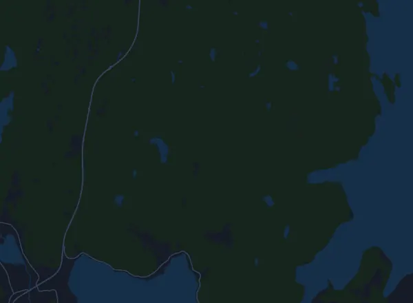

Höga Kusten Trail – The Original 45k
- Distance
- 45 km
- Højdemeter
- ↑ 1.623 m
- Højeste punkt
- 311 m o.h.
- Underlag
- Terræn og sti
- Karakter
- Meget kuperet
- Væskedepoter
- 3
Højdeprofil
Forbered dig med Mila
Mila er en løbecoach i en app. Lægger du et løb ind i din plan, planlægger coachen ugerne frem til start efter din form og giver dig en tidsprognose og en plan for tempo, væske og energi på ruten.

Den rette træning. Den rette dag.
Ruten

Om ruten
Höga Kusten Trail – The Original 45k er et trailløb på 45 km i Skuleskogen Entré Väst, Höga kusten, Sverige. Ruten har 1.623 højdemeter stigning og 1.539 højdemeter fald, 36 m pr. km, og regnes dermed som meget kuperet. Det højeste punkt ligger 311 m o.h. og det laveste 4 m o.h.
Den største stigning begynder ved km 34,8: 254 højdemeter på 3,6 km med 7,0 % i snit, op til 294 m o.h. I alt har ruten 16 stigninger på mindst 25 højdemeter; den sidste begynder ved km 41,0.
Arrangøren har 3 væskedepoter langs ruten, det første ved km 15,0 og det sidste ved km 38,0.
I Mila-appen beskriver coachen ruten i detaljer på dit sprog og planlægger dit tempo og din energi til den.
Stigninger
| Begynder ved | Længde | Højdemeter | Hældning | Top (m o.h.) |
|---|---|---|---|---|
| km 0,0 | 3,4 km | 105 m | 3,1 % | 311 |
| km 4,4 | 1,5 km | 27 m | 1,8 % | 264 |
| km 6,0 | 1,2 km | 36 m | 3,0 % | 289 |
| km 8,6 | 880 m | 88 m | 9,9 % | 273 |
| km 13,8 | 2,3 km | 42 m | 1,8 % | 51 |
| km 17,1 | 1,9 km | 159 m | 8,2 % | 191 |
| km 19,1 | 1,5 km | 83 m | 5,6 % | 266 |
| km 20,7 | 340 m | 26 m | 7,8 % | 279 |
| km 23,3 | 3,9 km | 93 m | 2,4 % | 114 |
| km 28,2 | 300 m | 25 m | 8,6 % | 51 |
| km 28,6 | 730 m | 28 m | 3,8 % | 70 |
| km 29,8 | 820 m | 25 m | 3,1 % | 82 |
| km 31,0 | 1,3 km | 141 m | 11,0 % | 204 |
| km 33,2 | 1,4 km | 32 m | 2,3 % | 47 |
| km 34,8 | 3,6 km | 254 m | 7,0 % | 294 |
| km 41,0 | 2,3 km | 254 m | 11,0 % | 290 |
Før start
Væskedepoter
| Ved | Her er |
|---|---|
| km 15,0 | mad |
| km 26,0 | vand, sportsdrik, mad, salt |
| km 38,0 | vand, sportsdrik, mad, salt |
Kilde: hogakustentrail.se, hentet 24. november 2026
Tempotabel
Höga Kusten Trail – The Original 45k på 3:45:00 – tid pr. km og mellemtider
5:00 pr. km · km 10: 50:00 · km 20: 1:40:00 · km 30: 2:30:00 · km 40: 3:20:00 · mål: 3:45:00
Höga Kusten Trail – The Original 45k på 4:30:00 – tid pr. km og mellemtider
6:00 pr. km · km 10: 1:00:00 · km 20: 2:00:00 · km 30: 3:00:00 · km 40: 4:00:00 · mål: 4:30:00
Höga Kusten Trail – The Original 45k på 5:15:00 – tid pr. km og mellemtider
7:00 pr. km · km 10: 1:10:00 · km 20: 2:20:00 · km 30: 3:30:00 · km 40: 4:40:00 · mål: 5:15:00
Höga Kusten Trail – The Original 45k på 6:00:00 – tid pr. km og mellemtider
8:00 pr. km · km 10: 1:20:00 · km 20: 2:40:00 · km 30: 4:00:00 · km 40: 5:20:00 · mål: 6:00:00
Tiderne forudsætter et jævnt tempo hele vejen. Det er ren regning, ingen prognose: på stigninger, i trængsel og ved væskedepoter svinger tempoet.
Ofte stillede spørgsmål
Hvornår løbes Höga Kusten Trail – The Original 45k?
Datoen for næste udgave er ikke fastlagt endnu. Løbet blev senest afviklet 29. august 2026.
Hvor langt er Höga Kusten Trail – The Original 45k, og hvor mange højdemeter er der?
Løbet er 45 km langt med 1.623 højdemeter stigning og 1.539 højdemeter fald. Det højeste punkt ligger 311 m o.h.
Hvordan er ruten på Höga Kusten Trail – The Original 45k?
Ruten regnes som meget kuperet, med 36 højdemeter pr. km i snit. Den har 16 stigninger på mindst 25 højdemeter; den største begynder ved km 34,8: 254 højdemeter på 3,6 km. Ruten går fra start til et mål et andet sted. Underlaget er terræn og sti.
Er der væskedepoter på Höga Kusten Trail – The Original 45k?
Ja. Arrangøren har 3 væskedepoter: km 15,0 (mad); km 26,0 (vand, sportsdrik, mad, salt); km 38,0 (vand, sportsdrik, mad, salt).
Hvordan fordeler jeg farten på Höga Kusten Trail – The Original 45k?
Gå efter en jævn indsats frem for et jævnt tempo: lad farten falde på stigningerne, hent den igen, når det flader ud, og hold igen de første kilometer. De største stigninger begynder ved km 17,1, km 31,0, km 34,8 og km 41,0. I Mila får du en tempoplan til netop denne rute efter din egen form.
Flere løb som dette
Flere løb i nærheden
- Premiärmilen 10 km3. april 2027 · Stockholm (Norra Djurgården), Sverige
- Stockholm Halvmaraton 21 km21. august 2027 · Stockholm, Sverige
- Stockholm Marathon 42,2 km29. maj 2027 · Stockholm, Sverige
- Åre Vertical K 5 km3. august 2027 · Årefjällen, Sverige
- Blodomloppet Stockholm 10 km2. juni 2027 · Stockholm (Djurgårdsbrunn), Sverige
- COOP Kungsholmen Runt 10 km8. maj 2027 · Stockholm (Rålambshovsparken, Kungsholmen), Sverige
Forbered dig med Mila
Den rette træning. Den rette dag.
Oplysningerne kommer fra rutefilen og arrangørens information. Tjek dato, starttider og regler hos arrangøren.
Mila er ikke tilknyttet, sponsoreret af eller godkendt af arrangøren eller løbets sponsorer. Navne og varemærker tilhører deres ejere. Arrangør eller rettighedshaver? Bed om ændring eller fjernelse